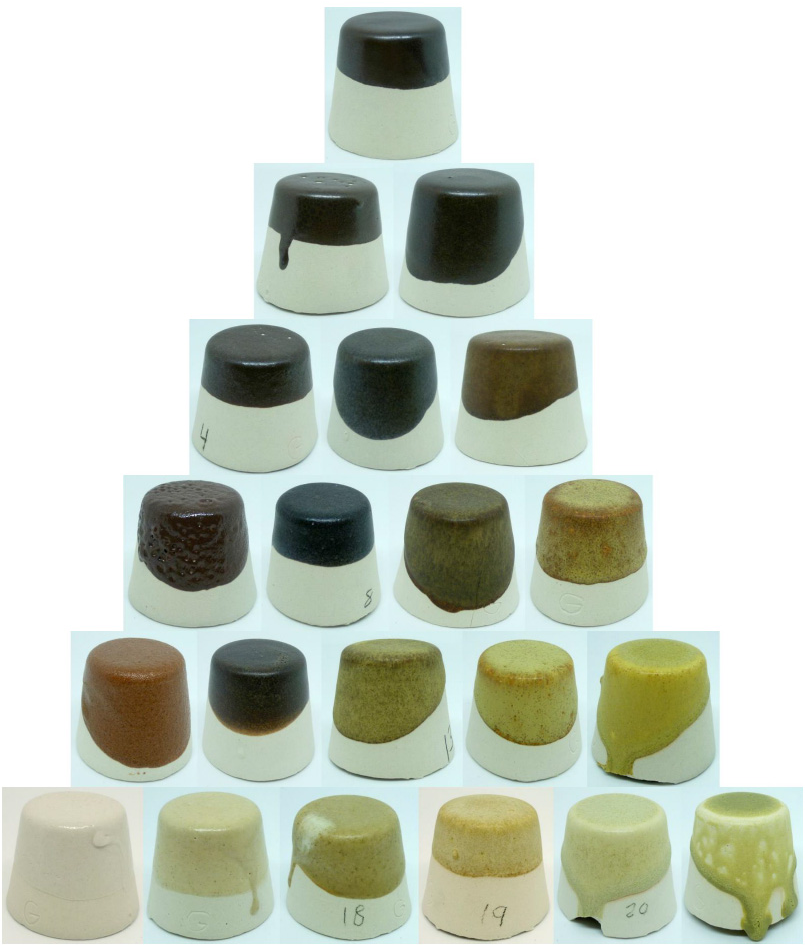

Hay un montón de maneras de preparar un muestrario de vidriados, es decir, de preparar muestras que sirvan para tus piezas. Y lo mejor, es que no necesitas ceñirte a ninguno de estos métodos, puedes inventar uno tú mismo. A mí, por ejemplo, me gusta el método de Ian Currie. Por dos razones, una es que ya está inventado. Y es que da pereza inventar algo nuevo, más cómodo ir a lo seguro. Y, por otra parte, porque es un método muy enrevesado y lleno de complicaciones, que lleva tiempo explicar a los alumnos y los tiene ocupados durante bastantes clases. En fin, no debería decir estas cosas…
El método más clásico y sencillo es el de mezclas lineales, que consiste en coger dos cosas y mezclarlas en proporciones diferentes, a ver qué sale. Por ejemplo, en las siguientes imágenes tenemos tres mezclas de arcilla de Navalacruz, que es un pueblo de Ávila, con cenizas.
Otro método clásico son las mezclas triaxiales, que viene a ser como el método anterior pero mezclando tres cosas en lugar de dos. Es un método que se usa mucho en cerámica para hacer gamas de color. En la imagen siguiente, no se muestra una gama de color sino mezclas de diferentes materias primas: pasta PF en el vértice superior, feldespato potásico en el vértice inferior izquierdo, y una mezcla de 30% pasta PF + 30% ortosa + 40% dolomita en el vértice inferior derecho

Y, por supuesto, está el método de Ian Currie, que tiene su propia sección en este programita.